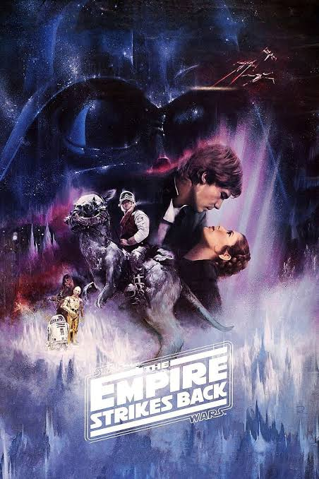
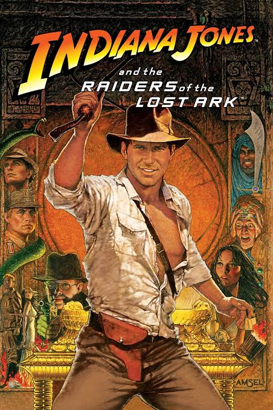
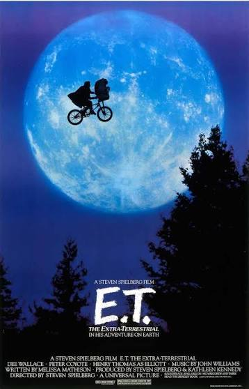
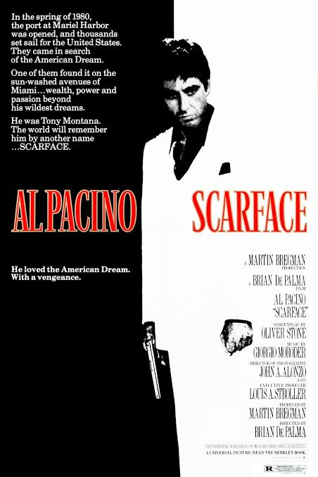
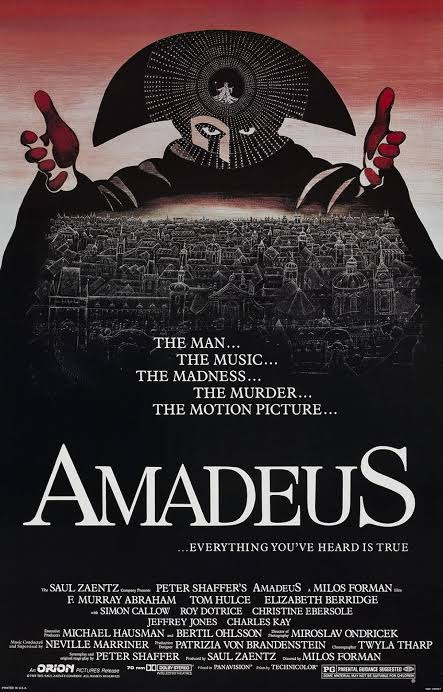
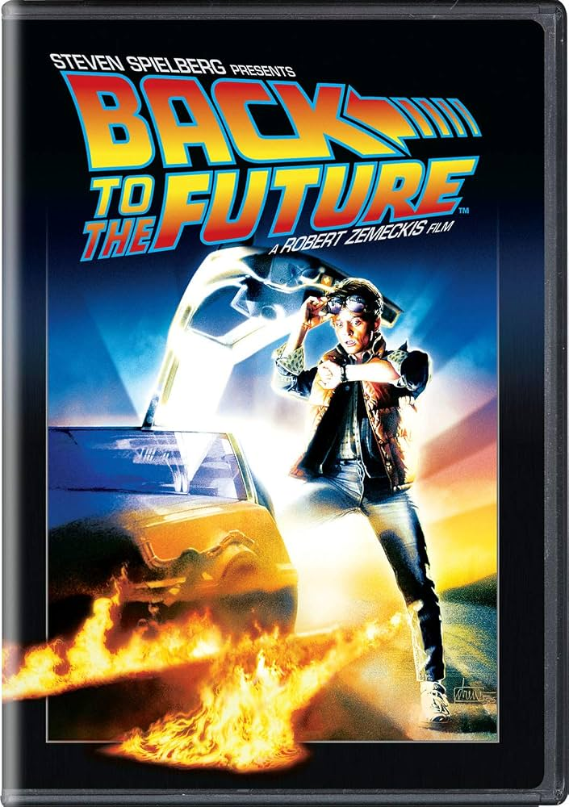
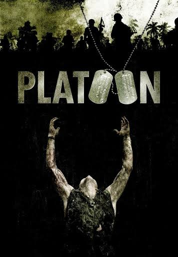
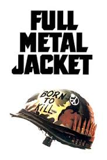
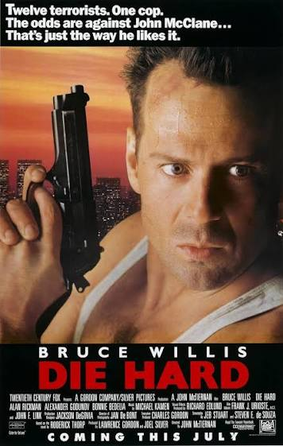
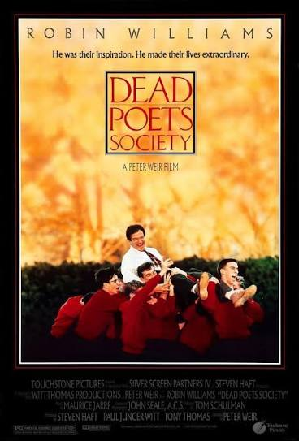

El imperio contraataca
Año: 1980
Director: Irvin Kershner
im your father
La épica saga continúa mientras Luke Skywalker, con la esperanza de derrotar al malvado Imperio Galáctico, aprende las enseñanzas Jedi del anciano maestro Yoda. Pero Darth Vader está más decidido que nunca a capturar a Luke. Mientras tanto, la líder rebelde Princesa Leia, el arrogante Han Solo, Chewbacca y los droides C-3PO y R2-D2 se ven envueltos en diversas situaciones de captura, traición y desesperación.

En busca del arca perdida
Año: 1981
Director: Steven Spielberg
El regreso de la gran aventura.
Cuando el Dr. Indiana Jones, el profesor vestido de traje de tweed que resulta ser un célebre arqueólogo, es contratado por el gobierno para localizar la legendaria Arca de la Alianza, se encuentra luchando contra todo el régimen nazi.

E.T., el extraterrestre
Año: 1982
Director: Steven Spielberg
He is afraid. He is totally alone. He is 3,000,000 light years from home.
Un extraterrestre queda varado en la Tierra y es rescatado por Elliott, un niño de 10 años que decide esconderlo en su casa. Mientras un grupo de investigación busca al alienígena, Elliott, su hermano y su hermana pequeña Gertie entablan una relación afectiva con su nuevo amigo e intentan ayudarlo a encontrar el camino de regreso a casa.

Scarface
Año: 1983
Director: Brian De Palma
He loved the American Dream. With a vengeance.
Tras obtener la residencia permanente a cambio del asesinato de un funcionario cubano, Tony Montana se adueña del narcotráfico en Miami. Asesinando brutalmente a cualquiera que se interpusiera en su camino, Tony se convierte en el capo de la droga más poderoso del estado, controlando prácticamente toda la cocaína que pasa por Miami. Sin embargo, la creciente presión policial, las guerras con los cárteles colombianos y su propia paranoia, alimentada por las drogas, avivan las llamas de su eventual caída.

amadeus
Año: 1984
Director:milos forman
THE MAN , THE MUSIC , THE MURDER , ,THE MADNESS, THE MOTION PICTURE
El disciplinado compositor italiano Antonio Salieri se ve consumido por los celos y el resentimiento hacia el joven compositor salzburgués Wolfgang Amadeus Mozart, un joven hedonista y de extraordinario talento.

Volver al futuro
Año: 1985
Director: Robert Zemeckis
He was never in time for his classes… He wasn’t in time for his dinner… Then one day… he wasn’t in his time at all..
Marty McFly, un adolescente de los años ochenta, viaja accidentalmente en el tiempo hasta 1955, interrumpiendo sin querer el primer encuentro de sus padres y despertando el interés romántico de su madre. Marty debe reparar el daño causado a la historia reavivando el romance de sus padres y, con la ayuda de su excéntrico amigo inventor, Doc Brown, regresar a 1985.

Pelotón
Año: 1986
Director: Oliver Stone
The first casualty of war is innocence
En Vietnam, Chris Taylor, un joven e ingenuo recluta, se enfrenta a una crisis moral al verse confrontado con los horrores de la guerra y la dualidad del ser humano.

La princesa prometida
Año: 1987
Director: stanley kubrick
In Vietnam, the wind doesn’t blow. It sucks.
Un pragmático marine estadounidense observa los efectos deshumanizadores que la guerra entre Estados Unidos y Vietnam tiene sobre sus compañeros reclutas, desde su brutal entrenamiento en el campo de instrucción hasta los sangrientos combates callejeros en Hue.

Duro de matar
Año: 1988
Director: John McTiernan
El plan del policía de Nueva York, John McClane, para reconciliarse con su esposa, de quien está separado, se ve seriamente truncado cuando, minutos después de llegar a la fiesta de Navidad de la oficina de ella, todo el edificio es tomado por un grupo de terroristas. Con poca ayuda del Departamento de Policía de Los Ángeles, el ingenioso McClane se propone rescatar a los rehenes y acabar con los malos por su cuenta

la sociedad de los poetas muertos
Año: 1989
Director:Peter Weir
carpe diem
En un internado de élite y de tradición clásica en Nueva Inglaterra, un apasionado profesor de inglés inspira a sus alumnos a rebelarse contra las convenciones y a aprovechar el potencial de cada día, ganándose el desdén del severo director